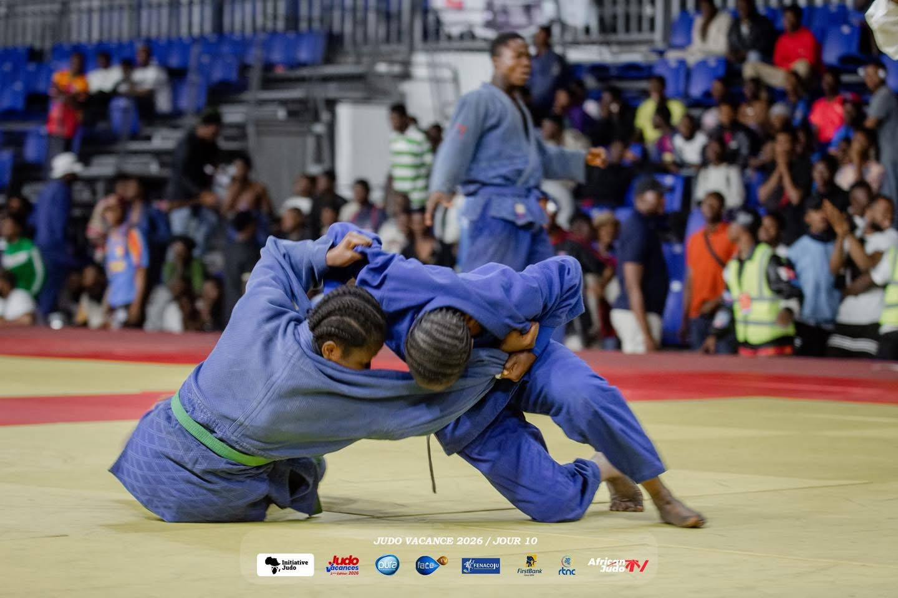
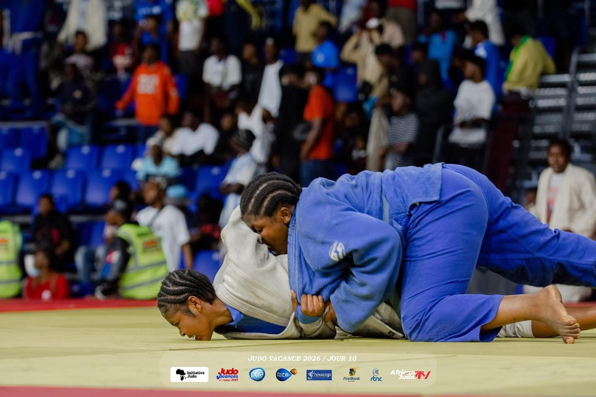
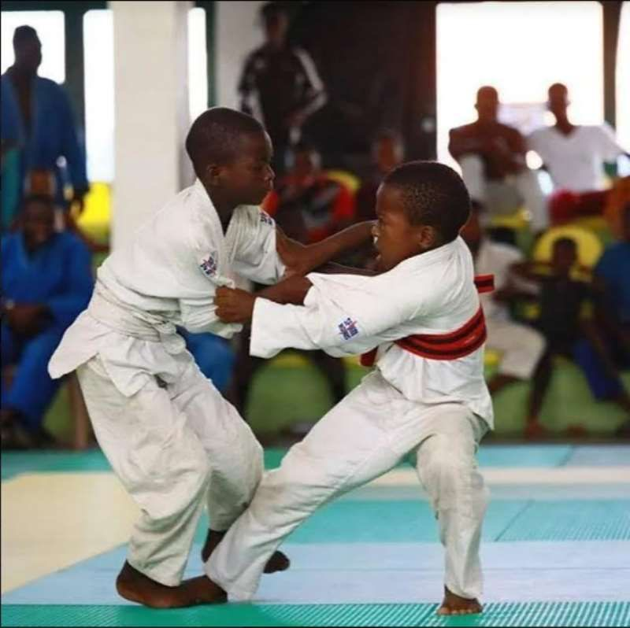
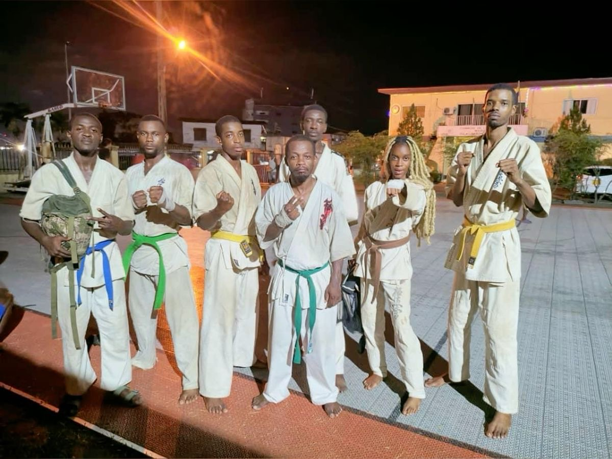
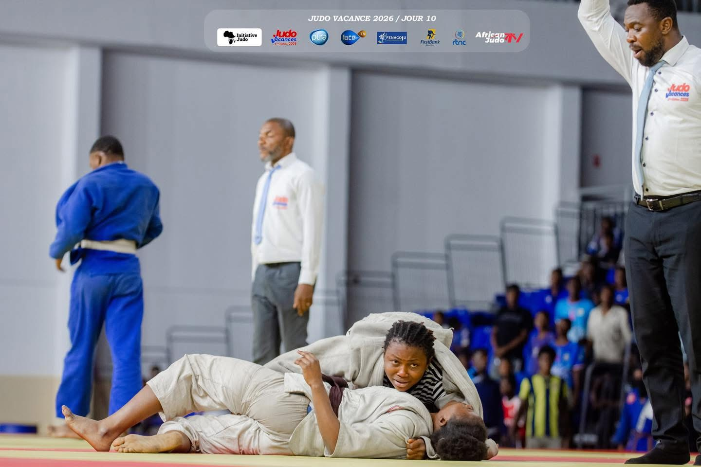
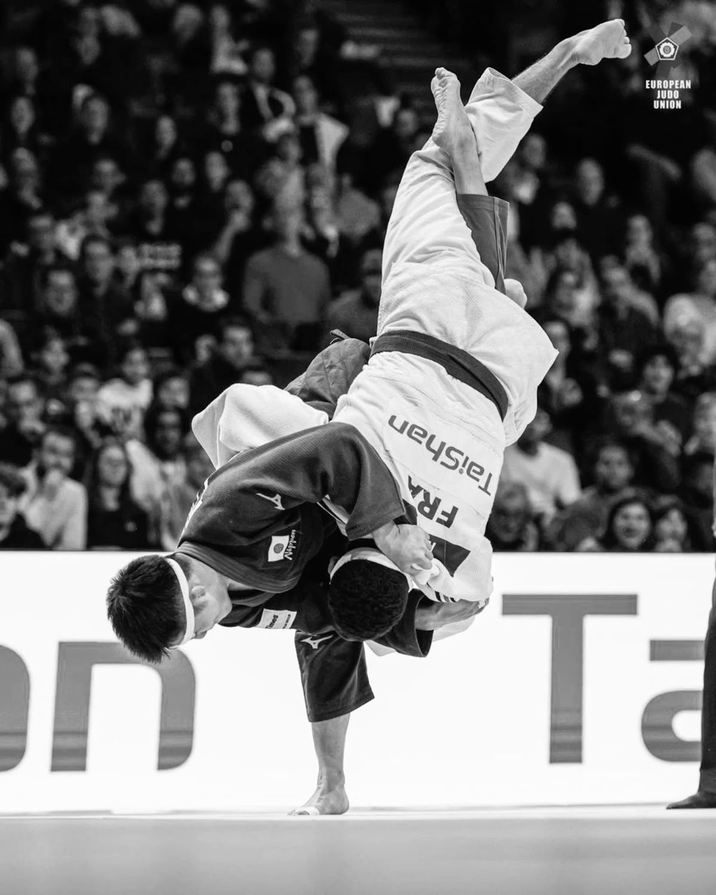
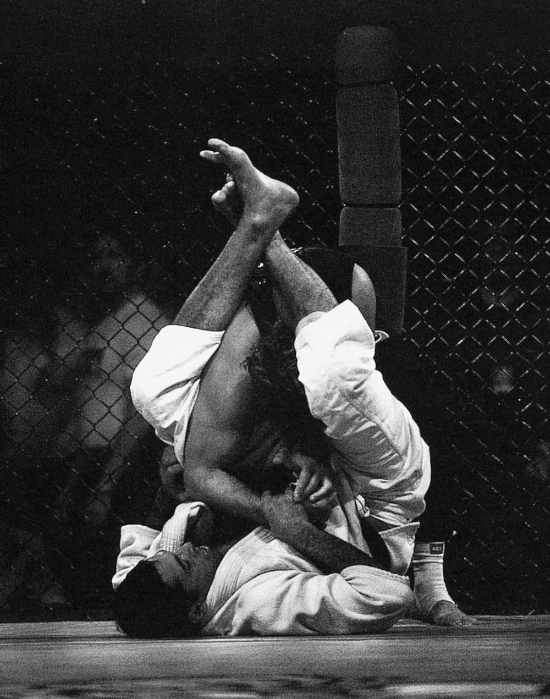
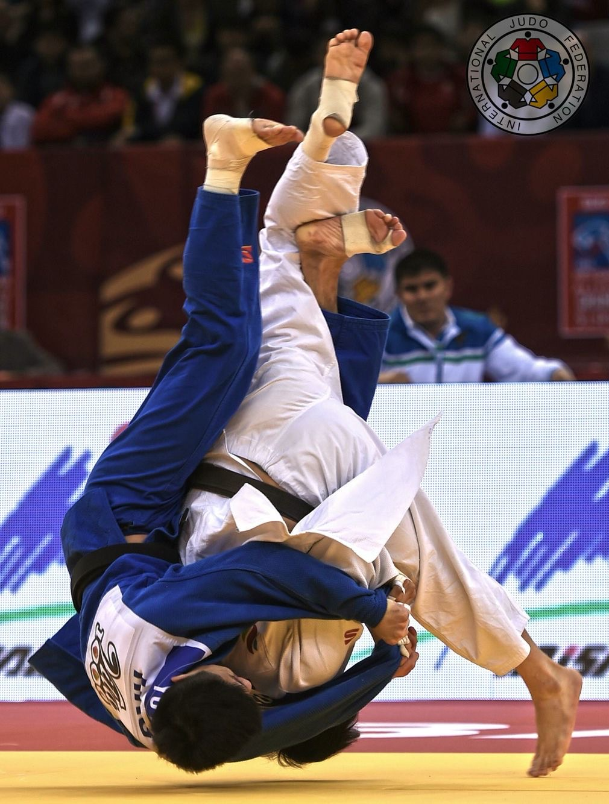

Initiation
Judo traditionnel
Projections, immobilisations et contrôle, enseignés dès les premiers cours.
La Fédération de Judo du Congo forme les athlètes, arbitres et clubs du pays — de la première ceinture blanche jusqu'aux podiums nationaux.

+450 licenciés 12 clubs affiliésLa fédération
Reconnue par les autorités sportives nationales, la fédération encadre l'enseignement du judo, organise les compétitions officielles et forme les ceintures noires et les arbitres à travers le pays.
Ce qu'on enseigne

Projections, immobilisations et contrôle, enseignés dès les premiers cours.

Préparation aux tournois nationaux et internationaux selon le règlement IJF.

Suivi de la ceinture blanche à la noire, examens deux fois par an.
À travers le pays




À l'agenda
Compétition ouverte à toutes les catégories d'âge — Brazzaville
Session d'examen pour les ceintures marron et noire
Finale nationale, toutes catégories — Pointe-Noire